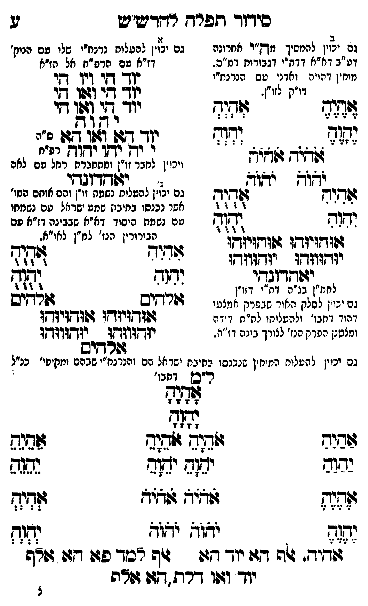

Neue Klartextfassung
[א — גם יכוין להעלות נרנח"י שלו עם נוק' דז"א עם מו"ס מ"ה אל ז"א] יוד הי ויו הי יוד הי ואו הי יוד הי ואו הי יהוה יוד הא ואו הא [מ"ה] י יה יהו יהוה [רפ"ח] [ויכוין לחבר זו"ן ומתחברים הכל עם השם] יאהדונהי [ב — גם יכוין להמשיך מהו"ס לחו"ב דע"ב דא"א רמ"י דגבורות דמ"ה. מוחין דיניקה ואדני עם הנרנח"י דו"ק לזו"ן. [?]] === טבלה === [טור ימין] אִהִיִהִ יִהִוִהִ [טור אמצעי] אוּהוּיוּהוּ אוּהוּיוּהוּ יוּהוּווּהוּ יוּהוּווּהוּ [טור שמאל] אֻהֻיֻהֻ יֻהֻוֻהֻ === סוף טבלה === יאהדונהי [לחו"ן נרנח"י דמ"ה דזו"ן גם יכוין לסלק האור שבפרק האמצעי דהוד דתבו' ולהעלותו למ"ס דידה ומלבוש הפרק הנז' לצורך בינה דז"א.] [ג — גם יכוין להעלות נשמת זו"ן ועם מוחם הנז' אחר שנכנסו בבינה שהם ישראל עם נשמתו עם נשמת יסוד דא"א שבבינה דז"א עם הבירורין הנז' למ"ן לחו"ב. [?]] === טבלה === [טור ימין] אִהִיִהִ יִהִוִהִ אלהים [טור אמצעי] אוּהוּיוּהוּ אוּהוּיוּהוּ יוּהוּווּהוּ יוּהוּווּהוּ אלהים [טור שמאל] אֻהֻיֻהֻ יֻהֻוֻהֻ אלהים === סוף טבלה === [גם יכוין להעלות המוחין שנכנסו בבינה יעלו גם הנרנח"י שבהם ומקיפי' כנ"ל] [ל"ם דתבו'] אָהָיָהָ יָהָוָהָ === טבלה === [טור ימין] אַהַיַהַ יַהַוַהַ אֶהֶיֶהֶ יֶהֶוֶהֶ [טור אמצעי] אֹהֵיָהֵ אֹהֵיָהֵ יֹהֵוָהֵ יֹהֵוָהֵ אֹהֹיֹהֹ אֹהֹיֹהֹ יֹהֹוֹהֹ יֹהֹוֹהֹ [טור שמאל] אֵהֵיֵהֵ יֵהֵוֵהֵ אְהְיְהְ יְהְוְהְ === סוף טבלה === אהיה. אלף הא יוד הא אלף למד פא הא אלף יוד ואו דלת הא אלף
Original gegen neue OCR · Niqqud für Vergleich ausgeblendet
Original
[א —K144-001 גם יכויןK144-002 להעלות נרנח"י שלוK144-003 עם נוק' דז"א עם מו"ס מ"ה אל ז"א] יוד הי ויו הי יוד הי ואו הי יוד הי ואו הי יהוה יוד הא ואו הא [מ"ה] י יה יהו יהוה [רפ"ח] [ויכוין לחבר זו"ן ומתחברים הכל עם השם] יאהדונהי [ב — גם יכוין להמשיך מהו"ס לחו"בK144-004 דע"ב דא"א רמ"יK144-005 דגבורות דמ"ה.K144-006 מוחין דיניקה ואדני עםK144-007 הנרנח"י דו"ק לזו"ן. ] === טבלה === [טור ימין] אהיה יהוה [טור אמצעי] אוהויוהו אוהויוהו יוהוווהו יוהוווהו [טור שמאל] אהיה יהוה === סוף טבלה === יאהדונהי [לחו"ן נרנח"י דמ"ה דזו"ןK144-008 גם יכויןK144-009 לסלק האור שבפרק האמצעיK144-010 דהוד דתבו' ולהעלותו למ"ס דידה ומלבושK144-011 הפרק הנז' לצורך בינה דז"א.] [ג —K144-012 גם יכוין להעלות נשמת זו"ן ועם מוחם הנז' אחרK144-013 שנכנסו בבינה שהםK144-014 ישראל עם נשמתו עם נשמת יסוד דא"א שבבינה דז"א עם הבירורין הנז' למ"ן לחו"ב. ] === טבלה === [טור ימין] אהיה יהוה אלהים [טור אמצעי] אוהויוהו אוהויוהו יוהוווהו יוהוווהו אלהים [טור שמאל] אהיה יהוה אלהים === סוף טבלה === [גם יכוין להעלות המוחין שנכנסו בבינה יעלו גם הנרנח"יK144-015 שבהם ומקיפי' כנ"ל] [ל"ם דתבו'] אהיה יהוה === טבלה === [טור ימין] אהיה יהוה אהיה יהוה [טור אמצעי] אהיה אהיה יהוה יהוה אהיה אהיה יהוה יהוה [טור שמאל] אהיה יהוה אהיה יהוה === סוף טבלה === אהיה. אלף האK144-016 יוד הא אלף למד פא הא אלף יוד ואו דלת הא אלףK144-017
OCR · fehlbar
סידוךד תפרד דדרט"ש 2K144-001 גם יצ להמסיך מךז"י אחרונה גם יל(K144-002 להעלות נרנז"י שליK144-003 עם הניק'K144-004 דע"ב דא"א דדח"יK144-005 דגבורות דמ"ס. דז"א טם הרפ"ח אל הז"אK144-006 מוחין דהויה ואדנן טםK144-007 הנרנח"י י(ך- ד[ דיך דקי וי"ק לזיז. לצש[שסללל[בץ ת"ד (זדוש יוד (7ב [ז2 די ב' 4- 70 4 3 2 2 2 3 ב] ך בל (דזב יד(ח 412623377: ל: - - - - 2 22 -2272- ' - - 4 ו ודק יךקך יקץךק צרפ"ח זלה(- ווקיך ויכוין יוזל רז זב זאנ נוך ישוך י. - י:פדחדוגד-י עשדיחק גשדיחK144-008 גם ילז"ן להעלוח נשמת זי"ן והם אותם המו' 2 - ז 373 3 אשר נכנסו בתיביז שמע ישראל טם נשמחו וד( ווז- טם נשמת היסוד דא"א שבבינה דז"א פם אלללל ג(וגגילן הבירורין הנז' למ"ן לאו"א. ז ז ז ז' ף זיזוולא- ל[ג[י[ח) 3ל[2 [ל[[3 יגשחדובךי וח( 244 לחח"ן בג"ה דא"י דזנין . גלצל גם ינויןK144-009 לסלק האור שבפרק זמנג. 4ורד-ב שרדיםK144-010 דהוד דחבו' זלהעלוחו לת"ש ד ידה דה(דזזיזדןו דפוד(יזדו ומצטנןK144-011 הפרק הנז' לצורך בינה דז"א. יק(וותך יזד(וגדו זזרקקיסK144-012 גם יכוין להטלוח המיחיןK144-013 שנכנסו בחיבחK144-014 ישראל שם והנרנח"יK144-015 שבהם ומקיפי' כנ"ל ר"סן דחבו' לצד ומד בנב לתוח לגב 2343 נשוב בגף יזד גדצה [זזז גוזי גצ"ץ ל3 צז])) זוז :דז9 243 גודיד. זה -זו יוך זו 44 דכד פצו דזו ורהK144-016 יוד וזשו דרת (24 גזהK144-017